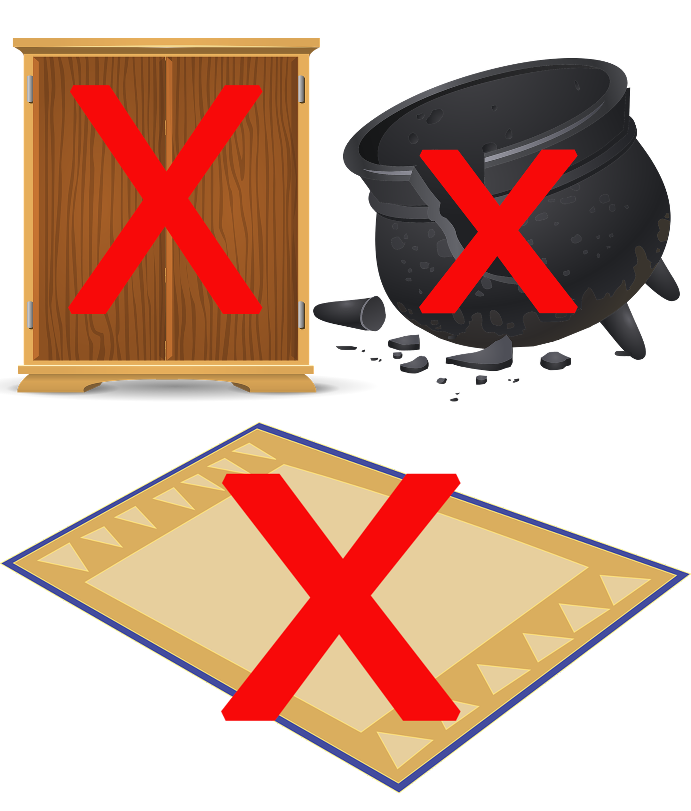

Welkom in de weggeefwinkel!
Welkom
Fijn dat u hier even een kijkje komt nemen.
Wat is een weggeefwinkel?
Dat is een winkel zonder kassa. Je kunt er gratis spullen uitkiezen die je mooi vindt of kunt gebruiken. Je mag ze zomaar meenemen, zonder betalen of ruilen. Een winkel waar je gratis spullen kan halen. Je hoeft hier dus niets voor te doen. Iedereen is welkom!
Ook mensen die graag spullen weggeven zijn hier welkom, er zijn wel enkele voorwaarden:
Wat mag je brengen?
Bruikbare spullen zoals
- kleren
- boeken
- beddengoed
- gordijnen
- speelgoed
- decoratie
- elektronica (gsm, tv, radio,…)
- servies
- schoenen
- knuffels
- …

Wat mag je niet brengen?
Spullen die niet bruikbaar of stuk zijn. We aanvaarden ook geen grote matten en geen grote meubels. Hiervoor kan je terecht in onze Facebook-groep Weggeefgroep Weggeefwinkel Olmen. Vraag er om lid te worden en na aanvaarding kan je er foto's posten Van spullen die je wil weggeven. Mensen die geïnteresseerd zijn kunnen jou dan een berichtje sturen.
Brengen kan enkel tijdens de openingsuren. Spullen achterlaten buiten de openingsuren is ten strengste verboden.

Openingsuren
De winkel is elke dinsdag open van 11u tot 17u en van 18u tot 20u
Op elke eerste en derde zaterdag van de maand is de winkel open van 11u tot 15u
Vervoer
Bus
- Bus 84 Geel - Hamont. (deze heeft haltes in Hamont, Lommel, Mol en Geel). Stap af aan halte Werkplaatsen Dubbelrij, het is dan nog vijf minuten wandelen.
- Belbus 713 Lommel West, deze heeft haltes in Heeserbergen, Heuvel, Lommel, Werkplaatsen en Wijerwerken. Stap af aan halte werkplaatsen kerk. Klik op de volgende link als je meer informatie wilt hebben over de belbus.
Trein
- Lommel Station is op ongeveer 20 minuten fietsen van de Weggeefwinkel (1 uur te voet)
- Aan het station kan je bus 58 nemen richting Beringen -Lommel tot halte Lommel Kerk. Daar stap je over op bus 84 richting Hamont - Geel en stap je af op halte Werkplaatsen Dubbelrij. Je bent dan ongeveer 25 minuten onderweg.
Keuzeproject 1ITF @ Thomas More- prototype ontwikkeld door Zalos Design